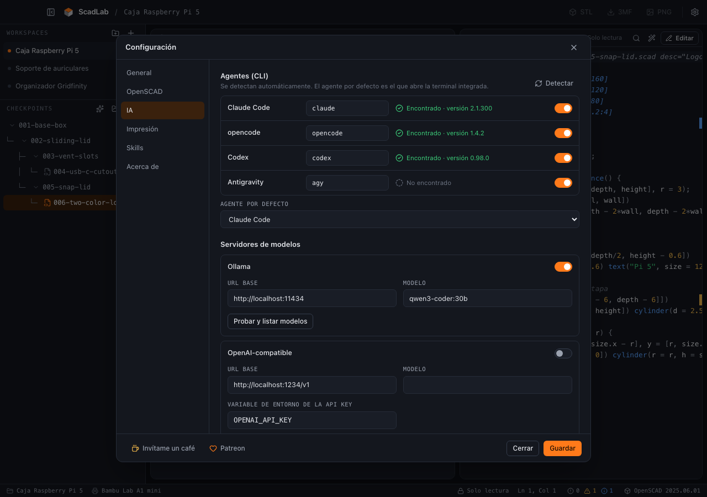

Una app de escritorio para diseñar modelos 3D en OpenSCAD conversando con agentes de IA,
ver cada versión en un visor 3D y dejar el modelo listo para imprimir en tu Bambu Lab — STL, o 3MF
multicolor para el AMS.
OpenSCAD
Claude Code
opencode
Codex
Antigravity
Ollama
Bambu Lab A1 · A1 mini · P1S · X1C · H2D
STL · 3MF
macOS · Windows
Español · English
Ventana principal: workspaces y árbol de checkpoints a la izquierda, visor al centro, código a la derecha y agente de IA abajo.
La idea
OpenSCAD describe un modelo con código: es preciso, paramétrico y se versiona como texto. Lo difícil es
escribirlo. ScadLab pone un agente de IA a escribir ese código por ti, y se encarga de lo que rodea a esa
conversación:
Cada cambio es un checkpoint
La IA nunca sobrescribe un archivo: cada versión es un .scad nuevo en un árbol con ramas. Volver atrás es hacer clic.
Lo ves al instante
Visor 3D con materiales realistas, medidas, peso y costo estimado de cada pieza.
Los errores se corrigen solos
Si OpenSCAD falla al renderizar, ScadLab le pasa el error al agente para que lo arregle en un checkpoint nuevo.
Pensado para Bambu Lab
Perfil de impresora por proyecto, aviso si no cabe en la placa y 3MF con color por pieza para el AMS.
Tus agentes, no uno nuestro
Usa el CLI que ya tengas instalado —Claude Code, opencode, Codex, Antigravity— o un modelo local con Ollama.
Local
Tus proyectos son carpetas en tu disco y la configuración vive en una base SQLite local. Sin cuenta.
Estado del proyecto
Esta ayuda describe la versión 0.1.0, que es la fundación de la app:
workspaces, configuración, idioma, detección de OpenSCAD y de los CLIs de agentes, y el paquete de skills.
Todo lo demás está planificado y documentado aquí de antemano para que sepas a dónde va el proyecto; cada
tema así lleva la insignia En desarrollo y un punto en el índice.
Área
Estado en v0.1.0
Workspaces, configuración, idioma ES/EN
Disponible
Detección de OpenSCAD y de CLIs de agentes
Disponible
Skills incluidas y plantilla para skills propias
Disponible
Render con OpenSCAD: estado, diagnósticos, auto-render y RENDER_ERRORS.md
Disponible
Visor 3D: navegación, vistas, modos, medidas, colores, captura PNG y vista dividida
Disponible
Editor de código: resaltado, buscar y reemplazar, linter, formato, autocompletado y guardar como checkpoint
Disponible
Ventana: paneles redimensionables, barra lateral plegable, barra de estado y panel Problemas
Disponible
Checkpoints avanzados, terminal de agentes, MCP, exportar, peso y costo
ScadLab es gratis, de código abierto y sin telemetría, y va a seguir así. Si te ahorra horas de modelado y quieres
que siga creciendo, puedes apoyarlo con un aporte único en Buy Me a Coffee o con una suscripción
mensual en Patreon. Los dos están también a un clic desde la app, en el pie de
Configuración.
Un ejecutable para macOS (Apple Silicon) y otro para Windows (x64). Los binarios no están
firmados todavía, así que el sistema avisa la primera vez que los abres.
Descomprímelo y arrastra ScadLab.app a Aplicaciones.
La primera vez, clic derecho → Abrir (no doble clic) y confirma en el diálogo.
Gatekeeper
Si macOS dice que la app «está dañada» o «no se
puede verificar el desarrollador», es porque no está firmada ni notarizada. Ve a Ajustes del Sistema →
Privacidad y seguridad y pulsa Abrir igualmente, o quita la marca de cuarentena desde
la terminal:
Ejecuta ScadLab.exe (o el instalador, si la versión trae uno).
Si aparece «Windows protegió su PC», pulsa Más información → Ejecutar de todas formas.
SmartScreen
El aviso aparece porque el ejecutable no está firmado
con un certificado de código y todavía tiene pocas descargas. No es un diagnóstico de virus. Si prefieres no
aceptarlo, compila desde el código fuente.
ScadLab usa WebView2 (el motor de Edge) para su interfaz. Viene incluido en Windows 10 y 11
actualizados; si faltara, la app te lo indica al arrancar.
Compilar desde el código
Necesitas Go, Node.js y la CLI de Wails v2:
go install github.com/wailsapp/wails/v2/cmd/wails@latest
git clone https://github.com/rafael180496/ScadLab.git
cd ScadLab
wails build # binario en build/bin/
Después de instalar
ScadLab no incluye OpenSCAD: necesitas instalarlo aparte. Sigue con Requisitos.
Requisitos: OpenSCAD y agentes
OpenSCAD es obligatorio: es el que convierte el código en geometría. Los agentes de IA son
opcionales, pero son la mitad de la gracia.
Configuración → OpenSCAD: detección automática, versión encontrada y motor de render.
OpenSCAD
Descárgalo desde openscad.org. Se recomienda una
versión de desarrollo reciente (snapshot) en lugar de la estable 2021.01: renderiza mucho más
rápido con el motor Manifold y exporta 3MF con color, que es lo que hace falta para el multicolor.
Al arrancar, ScadLab busca OpenSCAD en las rutas habituales y en el PATH, y muestra la versión
que encontró en Configuración. Si lo instalaste en otro sitio, indica la ruta a
mano ahí mismo.
Agentes de IA (opcionales)
ScadLab no trae su propio modelo: usa los CLIs que ya tengas instalados y con sesión iniciada. Detecta
cualquiera de estos:
Agente
Qué necesitas
Claude Code
El CLI claude instalado y con sesión iniciada
opencode
El CLI opencode con un proveedor configurado
Codex
El CLI codex con sesión iniciada
Antigravity
El CLI de Antigravity instalado
Ollama
Ollama corriendo en local (por defecto http://localhost:11434) y un modelo descargado
Cada agente se cobra y se rige por las condiciones de su propio proveedor; ScadLab solo lo ejecuta.
Tu primer proyecto
De una carpeta vacía a una pieza que puedes imprimir: crea un workspace, pídele algo al
agente y mira el resultado.
Diálogo de nuevo workspace: nombre, carpeta donde se crea e impresora.
1. Crea el workspace Disponible
Pulsa Nuevo workspace.
Ponle nombre (por ejemplo Caja sensores) y elige una carpeta vacía.
ScadLab crea la estructura y copia las skills para todos los CLIs.
2. Pídele el modelo al agente En desarrollo
Abre una terminal de agente en el workspace y describe la pieza con medidas:
Haz una caja de 60×40×25 mm con paredes de 2 mm y una tapa a presión con holgura de
0,2 mm. Esquinas redondeadas de 4 mm. Caja en azul y tapa en blanco. Debe caber en la A1 mini.
El agente crea 001-base-box.scad, lo valida con el MCP de OpenSCAD y el
checkpoint aparece en el árbol. Un checkpoint mínimo se ve así:
Cada petición nueva genera un checkpoint nuevo: «agrega cuatro agujeros de 3 mm en la base para
tornillos M3» crea 002-… con parent=001-…. Si no te gusta, haz clic en el
anterior y pide otra cosa: eso crea una rama.
4. Exporta
Con el checkpoint que te guste seleccionado, pulsa 3MF en la cabecera y ábrelo en Bambu
Studio. Detalle en Exportar.
Workspaces
Un workspace es un proyecto: una carpeta en tu disco con los checkpoints, la configuración
de la impresora y las reglas para los agentes.
Workspaces a la izquierda (tema claro): el abierto lleva el punto naranja.
Qué hay dentro Disponible
caja-sensores/
├── 001-base-box.scad # checkpoints: uno por versión
├── 002-m3-holes.scad
├── printer.json # impresora del proyecto
├── CLAUDE.md # reglas para Claude Code
├── AGENTS.md # reglas para opencode, Codex, Antigravity
├── lib/ # librerías (BOSL2, MCAD…) si las usas
├── .claude/skills/ # skills, copiadas para cada CLI
├── .agents/skills/
├── .opencode/skills/
└── .agent/skills/
Es una carpeta normal: puedes abrirla con cualquier editor, versionarla con Git o copiarla a otra máquina.
ScadLab la reconoce al volver a abrirla.
Crear, abrir y recientes Disponible
Nuevo workspace: nombre + carpeta. Si la carpeta ya tiene .scad, se respetan.
Abrir: elige una carpeta existente; ScadLab completa lo que falte (skills, reglas) sin tocar tus archivos .scad.
Hasta 4 ventanas abiertas a la vez, una por proyecto, cada una con sus propias terminales de
agente.
Sincronización de skills Disponible
Al crear o abrir un workspace, ScadLab copia las skills incluidas y las tuyas en las cuatro ubicaciones
que leen los CLIs. Así da igual qué agente uses: todos siguen las mismas reglas. Ver
Skills incluidas.
Checkpoints: el historial En desarrollo
Cada versión del modelo es un archivo .scad inmutable. El historial no está en una
base de datos: se reconstruye leyendo los archivos.
Árbol de checkpoints: 005-snap-lid es una rama que sale de 002-sliding-lid. El punto de cada nodo es su estado de render.
El formato
Nombre: NNN-slug.scad — número de tres dígitos (el siguiente al mayor que exista)
y un slug corto en kebab-case: 001-base-box.scad, 002-rounded-corners.scad.
En el primer checkpoint parent= va vacío. desc dice qué cambia respecto al padre, en
una frase y sin comillas dobles dentro.
Por qué son inmutables
La IA nunca sobrescribe un checkpoint, ni siquiera uno con error: el arreglo va en uno
nuevo. Así cualquier versión que viste sigue existiendo exactamente igual, y comparar o volver atrás no
depende de que nadie haya guardado nada. Cada checkpoint es autocontenido (copia todo el
código del padre): no hace include de otro checkpoint.
Cargar un checkpoint
Un clic en el árbol lo selecciona y, si nunca se renderizó y el auto-render está activo, lo renderiza. Las
mallas quedan en una caché en disco, así que volver a una versión que ya viste no recalcula
nada. Ver Renderizar y diagnósticos.
La descripción
Al pasar el ratón sobre un checkpoint, el tooltip muestra su desc: es la forma rápida de saber
qué cambió sin abrir el código.
Árbol, ramas y menú En desarrollo
El historial es un árbol, no una lista: puedes volver a cualquier punto y probar otra idea sin
perder la anterior.
Captura pendienteÁrbol, ramas y menú.
Ramificar
Selecciona un checkpoint que no sea el último y pídele un cambio al agente. El archivo nuevo toma el
siguiente número libre, pero su parent apunta al que elegiste:
Reabre la sesión del agente que creó ese checkpoint, con su contexto
Renderizar y diagnósticos Disponible
ScadLab corre OpenSCAD sobre cada checkpoint y te dice cómo salió: cuánto tardó, si la malla
vino de la caché y, si falló, qué error dio y en qué línea.
Render fallido: diagnósticos con su línea (clic = ir a esa línea en el código) y el aviso de RENDER_ERRORS.md para el agente. En el árbol, el punto rojo marca el checkpoint roto.
Renderizar y cancelar
Elige un checkpoint y pulsa Renderizar en el panel del visor. Mientras corre, el botón pasa a
Cancelar. Solo hay un render a la vez por workspace: si eliges otro checkpoint y lo renderizas,
el anterior se cancela. Si el render sale bien, la pieza aparece en el visor 3D
debajo de la barra de estado; si falla, el panel muestra los diagnósticos.
La barra de estado
Dato
Qué significa
Duración
Lo que tardó OpenSCAD, en segundos
Desde caché
La malla no se volvió a calcular: el código y sus include/use no cambiaron desde la última vez. Volver a un checkpoint ya renderizado es inmediato, incluso tras reiniciar la app
Motor
manifold o cgal. Si tu OpenSCAD es viejo y no conoce Manifold, ScadLab cae a CGAL solo
Versión
La versión de OpenSCAD que hizo el render
El estado en el árbol
Indicador
Estado
Spinner
Renderizando
Punto verde
Salió bien
Punto ámbar
Salió, pero con advertencias (una variable sin definir, un include que no encontró…)
Punto rojo
Falló
Sin punto
Todavía no se renderizó
Al pasar el ratón sobre el indicador se lee el resumen: la duración, cuántas advertencias hubo o el primer
error con su línea.
Diagnósticos y salida de OpenSCAD
Si el render tiene errores o advertencias, el panel los lista con su severidad, la línea y el
mensaje (y el archivo, si el error está en un include). Un modelo que no genera nada —por ejemplo,
todo dentro de un difference() que se resta entero— también cuenta como error. Debajo,
Salida de OpenSCAD despliega el texto completo que imprimió OpenSCAD, que se puede seleccionar y
copiar.
Auto-render
ScadLab vigila la carpeta del workspace abierto. Cuando aparece un .scad nuevo —por ejemplo, porque
un agente lo creó desde la terminal— el árbol se actualiza solo y, con el auto-render activo, ese checkpoint se
renderiza sin que toques nada. Si llegan varios a la vez, se renderiza el de número más alto. Elegir en el árbol
un checkpoint que nunca se renderizó también lo renderiza. Se apaga en
Configuración → OpenSCAD.
RENDER_ERRORS.md
Cuando un render falla, ScadLab escribe RENDER_ERRORS.md en la raíz del workspace: el archivo, los
errores con su línea, el código alrededor de cada una, las advertencias y la instrucción de corregirlo en un
checkpoint nuevo cuyo padre sea el que falló. Las reglas del workspace le dicen al agente que lo
lea. Cuando un render sale bien, el archivo se borra; uno cancelado o sin OpenSCAD no lo toca.
El archivo describe siempre el checkpoint más nuevo, que es sobre el que trabaja el agente.
Renderizar uno viejo mientras recorres el historial no lo escribe ni lo borra: abrir un checkpoint roto ya
superado no le manda al agente errores que ya corrigió, y abrir uno viejo que anda no esconde que el último
está roto. Ver
Auto-iteración de errores.
Si OpenSCAD no está
El panel lo avisa con un botón que abre Configuración en la pestaña OpenSCAD,
donde puedes indicar la ruta del ejecutable. Si lo instalas con la app abierta, el próximo render ya lo
encuentra. Ver Requisitos.
Navegar el modelo Disponible
Cuando un render sale bien, el visor muestra la pieza con materiales PBR y reflejos de entorno
sobre la placa de tu impresora, a escala, para que la veas como se verá impresa y no como una malla plana.
La pieza apoyada en la placa de la impresora del workspace, con las aristas marcadas. Arriba, la barra del visor; abajo a la izquierda, sus medidas.
La placa
La placa es la de la impresora del workspace, a escala real: cuadrícula de 10 mm (más marcada cada
50 mm) y la caja del volumen de impresión en líneas tenues. La pieza se apoya en la placa y se centra
sobre ella, como haría el laminador. El visor usa Z hacia arriba, igual que OpenSCAD.
Ratón y trackpad
Gesto
Acción
Arrastrar con botón izquierdo
Orbitar alrededor del modelo
Arrastrar con botón derecho, o Shift + arrastrar
Desplazar (pan)
Rueda, o pellizco en el trackpad
Zoom
Táctil
Un dedo orbita; con dos, el pellizco hace zoom y el arrastre desplaza.
Teclado
Haz clic en el visor para darle el foco. Las flechas orbitan, Shift+flechas desplazan,
+ / − hacen zoom, 1–7 eligen las vistas
y F encuadra la pieza. El botón ? de la barra del visor recuerda todos los controles.
Lista completa en Atajos de teclado.
Cambiar de checkpoint
Al elegir otro checkpoint la cámara se queda donde estaba: así se comparan dos versiones desde el mismo
ángulo. Mientras llega la malla nueva sigue a la vista la anterior, y volver a uno ya visto es instantáneo
(las mallas quedan en memoria). Si el render del checkpoint falla, el visor se oculta y el panel muestra los
diagnósticos; las advertencias de un render que salió bien quedan plegadas en
una esquina del visor.
Modos de vista y cámaras Disponible
Wireframe, aristas, proyección ortográfica o en perspectiva y siete vistas predefinidas, todo
desde la barra del visor.
Vista Arriba en ortográfica: sin deformación por la distancia, las ranuras y los standoffs se ven en su posición real.
Modos de render
Sólido (por defecto): materiales PBR con reflejos.
Wireframe (W): solo la malla, útil para ver la densidad de triángulos ($fn demasiado alto).
Aristas (E): sólido con los bordes de más de 30° marcados, para leer la forma de piezas monocromas.
Wireframe: los triángulos de la malla STL. Los cilindros de los standoffs concentran la mayoría.
Ortográfica o perspectiva
El botón Persp / Orto (O) cambia la proyección sin mover la vista.
La ortográfica no deforma por la distancia: es la que conviene para comparar medidas o alinear piezas mirando de
frente. La perspectiva es la natural para ver el conjunto.
Las siete vistas
Frente 1
Atrás 2
Izquierda 3
Derecha 4
Arriba 5
Abajo 6
Iso 7
Cada vista mira la pieza desde ese lado y la encuadra. Abajo es la que se olvida y la que más
importa para imprimir: muestra la cara que irá apoyada en la placa (desde abajo la placa se oculta para no
taparla). Encuadrar (F) vuelve a centrar la pieza sin cambiar el ángulo.
Medir una pieza: volumen, peso y costo
El panel de la esquina del visor dice cuánto mide la pieza y cuánto material lleva. El peso y el
costo de impresión llegan en una fase posterior.
Panel de la pieza, abajo a la izquierda del visor: tamaño, volumen, triángulos y si la malla es cerrada.
Qué muestra
Dato
De dónde sale
Tamaño X × Y × Z
Caja envolvente de la malla, en mm
Volumen
Volumen sólido de la malla, en cm³
Triángulos
Cuántos tiene la malla STL. Muchos suelen ser un $fn demasiado alto
Cerrada / Abierta
Si la malla es estanca (cada arista la comparten exactamente dos caras). Una abierta puede laminarse mal
Peso En desarrollo
Volumen × densidad del material, ajustado por el relleno
Costo En desarrollo
Peso × costo por kg del material
Hoy las medidas son de la malla entera. Medir cada pieza por separado —cada bloque de primer nivel con su
color(), por eso las skills obligan a la IA a colorear todo— llega con el 3MF por piezas
En desarrollo. Detalle del cálculo en Estimación de costo.
Colores, captura y vista dividida Disponible
Prueba colores, guarda una imagen del modelo y mira dos ángulos a la vez.
Vista dividida: Iso a la izquierda y Abajo a la derecha, pintadas con la muestra azul. El marco naranja indica la vista activa.
Seis muestras de color
La barra del visor tiene 6 muestras —pensadas como los filamentos que tienes cargados en el
AMS—. Un clic pinta la pieza de ese color; doble clic o clic derecho abre el
selector para cambiar la muestra, y la paleta se guarda. El color es solo del visor: para que quede en el
modelo (y en el 3MF), pídeselo al agente: «cambia la tapa a naranja».
Captura PNG
El botón de la cámara de la barra del visor guarda la vista activa tal como la ves —ángulo, modo y color—
en un PNG: ScadLab pregunta dónde guardarlo. Útil para documentar variantes o compartirlas antes de imprimir.
Vista dividida
Parte el visor en dos con una segunda cámara independiente sobre la misma pieza: por ejemplo
Iso a la izquierda y Abajo a la derecha, para ver la forma y la cara de apoyo a la vez. Haz clic en una de las
dos para activarla (queda con marco naranja): la barra y el teclado actúan sobre la activa, y cada una tiene su
propia proyección. La × de la derecha la cierra.
El editor de código Disponible
Monaco —el editor de VS Code, incluido en la app, sin internet— con resaltado de OpenSCAD,
buscar y reemplazar, formato automático, autocompletado con la documentación de cada módulo y un linter que
revisa el código mientras escribes. Guardar nunca toca el checkpoint: crea uno nuevo.
Código en solo lectura. El linter subraya en ámbar la pieza sin color() (línea 23) y en azul el parámetro sin rango (línea 7); la barra de estado cuenta los problemas.
Solo lectura y modo edición
Un checkpoint es inmutable, así que el código se abre en solo lectura (el candado de la
cabecera del panel y de la barra de estado lo dice). Pulsa Editar o haz doble clic
en el código para pasar a edición. Mientras editas, el árbol no cambia: el checkpoint sigue siendo el que era hasta
que guardes. Descartar (la flecha curva) vuelve al código guardado; si cambias de checkpoint o de
workspace con cambios sin guardar, ScadLab pregunta antes de perderlos.
Guardar = checkpoint nuevo
⌘S / Ctrl+S (o Guardar) abre un diálogo corto: el rótulo da
el nombre del archivo (007-tornillos-de-la-tapa.scad; el número lo asigna ScadLab) y la
descripción va al encabezado @checkpoint. El archivo nuevo es hijo del que estabas
viendo, aparece en el árbol, se abre y —con el auto-render activo— se renderiza solo. Igual que si lo hubiera hecho
la IA.
Guardar desde el editor: rótulo, nombre de archivo resultante y descripción del checkpoint hijo.
Autocompletado y ayuda de cada módulo
Al escribir aparecen los módulos, funciones, palabras clave y variables especiales ($fn, $fa…)
de OpenSCAD con su firma y su explicación en tu idioma. Elegir uno abre el paréntesis con el primer parámetro marcado,
y la ayuda de firma muestra el resto mientras escribes los argumentos (también con nombre:
r = 3 marca r). Pasar el ratón sobre un módulo integrado muestra la misma ayuda.
Modo edición: el autocompletado propone cylinder con su firma y sus parámetros.
Buscar y reemplazar
⌘F / Ctrl+F — buscar (también en solo lectura), con mayúsculas, palabra completa y expresiones regulares.
⌥⌘F o ⌘H / Ctrl+H — buscar y reemplazar (en modo edición).
Enter / Shift+Enter — siguiente / anterior; Esc cierra.
Buscar y reemplazar: wall aparece 6 veces, todas resaltadas.
Formatear
El botón de la varita, ⇧⌥F / Shift+Alt+F o el menú contextual ordenan el código: sangría
por llaves y paréntesis, un espacio alrededor de = y de los operadores, nada de espacios al final ni
líneas en blanco de más. Es conservador: nunca une ni parte líneas, no toca el interior de strings
ni comentarios y respeta la alineación de las anotaciones // [min:paso:max]. Un solo
⌘Z lo deshace. En solo lectura, formatear pasa primero a edición. La sangría (2 o 4 espacios) se elige en
Configuración → General → Editor de código.
El linter
Mientras editas —y una vez al abrir cada checkpoint— ScadLab revisa el código: primero con el parser del propio
OpenSCAD (errores de sintaxis, variables y módulos desconocidos, include que no existen) y después con
sus reglas propias, pensadas para imprimir y para el flujo de checkpoints. Los problemas se subrayan (rojo: error,
ámbar: advertencia, azul: sugerencia) y al pasar el ratón se lee el mensaje con su código.
Código
Tipo
Qué avisa
Por qué importa
syntax
Error
Lo que dice OpenSCAD al leer el archivo
Con un error de sintaxis no hay pieza.
SL001
Advertencia
Falta el encabezado // @checkpoint parent=… desc="…" en la línea 1, o está mal escrito
Sin él, el checkpoint no se cuelga del árbol.
SL002
Advertencia
parent= apunta a un archivo que no existe
El checkpoint aparece huérfano en el árbol.
SL003
Advertencia
Una pieza del nivel superior sin color()
En el 3MF multicolor quedaría sin filamento asignado.
SL004
Error
Un include <…> / use <…> que no se encuentra
El render falla o pierde piezas.
SL005
Advertencia
Un checkpoint incluye a otro checkpoint
Cada checkpoint tiene que ser autocontenido: si el otro cambia de lugar, este se rompe.
SL006
Sugerencia
$fn mayor a 256 en el nivel superior
Cada círculo del modelo tendrá esa resolución: render lento y mallas enormes.
SL007
Sugerencia
minkowski() dentro de otro minkowski() o hull()
El render puede tardar minutos u horas.
SL008
Advertencia
Una variable asignada dos veces en el mismo bloque
OpenSCAD usa solo la última: suele ser un error.
SL009
Sugerencia
Un parámetro del Customizer sin // [min:paso:max]
El Customizer no puede ofrecer un deslizador con límites.
Los diagnósticos del último render (Renderizar y diagnósticos) también se
marcan en el código mientras no lo cambies. Haz clic en cualquiera —en el panel del visor o en Problemas— para
saltar a esa línea.
El panel Problemas
Junto a Agente IA, abajo, la pestaña Problemas junta lo del linter y lo del
último render, errores primero y por línea, con su código y su origen. El contador de la barra de estado
(⊗ errores ⚠ advertencias ⓘ sugerencias) la abre.
Problemas de un checkpoint roto: linter y render juntos, con clic a la línea.
Opciones
En Configuración → General → Editor de código: sangría (2 o 4 espacios), tamaño de letra,
ajustar las líneas largas y minimapa. El editor sigue al tema claro u oscuro de la app.
La ventana: paneles y barra de estado Disponible
Barra lateral, visor, código y panel inferior se reparten la ventana como prefieras, y ScadLab
recuerda la disposición.
La barra de estado, abajo, resume dónde estás y qué pasa: workspace, impresora, modo del editor, cursor, problemas y versión de OpenSCAD.
Paneles redimensionables
Arrastra el borde entre dos paneles para repartir el espacio: barra lateral ↔ visor, visor ↔ código y visor ↔
panel inferior. Doble clic en un borde vuelve al tamaño de fábrica; con el borde enfocado
(Tab), las flechas lo mueven de a poco. La disposición se guarda al soltar.
Barra lateral plegable
El botón de la izquierda de la cabecera o ⌘B / Ctrl+B oculta y muestra la lista de
workspaces y el árbol, para dejarle todo el ancho al visor y al código.
Medidas del visor plegables
El panel de medidas de la pieza se pliega con su flecha: queda solo el tamaño en una línea. Útil en la vista
dividida, donde el panel completo tapaba la pieza.
La barra de estado
Workspace e impresora abiertos.
Modo del editor (solo lectura / edición, y si hay cambios sin guardar) y la posición del cursor.
Problemas: errores, advertencias y sugerencias del checkpoint abierto; un clic abre el panel.
OpenSCAD: la versión con la que renderiza ScadLab, o el aviso si no lo encuentra.
Agentes en la terminal En desarrollo
Una terminal integrada que ejecuta el agente que prefieras dentro del workspace. El agente
escribe checkpoints y tú los ves aparecer en el árbol.
Captura pendienteTerminal con Claude Code abierta bajo el visor, y el selector de agente.
Qué agentes
Claude Code, opencode, Codex y Antigravity — solo los que estén instalados: la
detección (ya disponible) decide qué aparece en el selector. Para chat con un modelo
local está Ollama.
Sesiones
Ver las sesiones anteriores del workspace.
Retomar una sesión con su contexto, también desde el menú de un checkpoint.
Nueva sesión cuando quieras empezar limpio.
Límites
Hasta 2 terminales por ventana —por ejemplo una con Claude Code y otra con Codex comparando
enfoques— y hasta 4 ventanas.
Reglas del workspace: CLAUDE.md y AGENTS.md En desarrollo
Cada workspace lleva un archivo de reglas que el agente lee al empezar. Es lo que garantiza
que el historial no se rompa, use el agente que use.
Captura pendienteReglas del workspace: CLAUDE.md y AGENTS.md.
Qué archivo lee cada agente
CLAUDE.md — Claude Code.
AGENTS.md — opencode, Codex y Antigravity.
Las reglas obligatorias
Nunca sobrescribir ni borrar un .scad: cada cambio es un checkpoint nuevo.
Usar colores: toda pieza de primer nivel dentro de color(...).
Validar cada checkpoint con el MCP de OpenSCAD antes de darlo por terminado.
Parámetros arriba, con comentarios de Customizer; todo en milímetros.
Respetar printer.json: el modelo tiene que caber en la placa.
Consejo
Puedes añadir reglas propias al final del archivo —«usa
siempre insertos M3 de 4,2 mm», «nada de voladizos mayores de 45°»—, pero no quites las obligatorias: son las
que mantienen el árbol de checkpoints coherente.
Servidor MCP de OpenSCAD En desarrollo
Un servidor MCP que le da al agente herramientas para renderizar y validar con el mismo
OpenSCAD que usa la app. Se configura solo en cada workspace.
Captura pendienteServidor MCP de OpenSCAD.
Qué le permite al agente
Renderizar un checkpoint y recibir los errores y advertencias de OpenSCAD.
Comprobar que el resultado cabe en la impresora del workspace.
Exportar a STL o 3MF.
Sin el MCP, el agente tendría que adivinar si su código compila. Con él, lo comprueba antes de decirte que
terminó.
Configuración automática
Al crear o abrir un workspace, ScadLab escribe la entrada del servidor en el archivo de configuración que
lee cada CLI (por ejemplo .mcp.json para Claude Code), apuntando a la ruta de OpenSCAD de tu
configuración. No tienes que tocar nada.
Auto-iteración de errores En desarrollo
Si un checkpoint no renderiza, ScadLab se lo dice al agente y le pide que lo corrija — sin
que tengas que copiar el error.
Captura pendienteAuto-iteración de errores.
Lo que ya hace Disponible
Cuando un agente crea un checkpoint, ScadLab lo renderiza solo y, si falla, deja
RENDER_ERRORS.md en el workspace; las reglas del workspace le dicen al agente que lo lea. Lo que falta
es el aviso automático en la terminal del agente (paso 3). Detalle en
Renderizar y diagnósticos.
Cómo funciona
El agente crea 004-add-hinge.scad y ScadLab lo renderiza.
OpenSCAD falla. ScadLab escribe RENDER_ERRORS.md en el workspace con el archivo, la línea y el mensaje.
Le pide al agente activo que lo lea y lo arregle.
El agente crea 005-fix-hinge.scad con parent=004-…. El 004 queda como estaba.
# RENDER_ERRORS.md
Archivo: 004-add-hinge.scad
ERROR: Parser error in file 004-add-hinge.scad, line 31: syntax error
Corrige el error en un checkpoint NUEVO con parent=004-add-hinge.scad.
Por qué un checkpoint nuevo
Corregir en el lugar rompería la regla de
inmutabilidad y perderías la pista de qué intentó la IA. Así el árbol muestra también los tropiezos.
Ollama local En desarrollo
Chat con un modelo que corre en tu máquina: sin cuenta, sin coste por token y sin que el
diseño salga de tu equipo.

Configuración → IA: los agentes detectados y el servidor Ollama con su modelo.
Prepararlo
ollama pull qwen2.5-coder:14b # o el modelo de código que prefieras
ollama serve # si no está corriendo ya
En Configuración → Ollama indica la URL (por defecto
http://localhost:11434) y el modelo.
Qué esperar
Ollama se usa para chat: preguntas sobre OpenSCAD, ideas de diseño, explicar un error. Para que
la IA escriba checkpoints, valide con el MCP y se corrija sola, usa uno de los agentes de
terminal. Los modelos locales pequeños se equivocan más con la geometría.
Cómo pedirle un modelo a la IA
La IA no ve tu pieza ni tu impresora: lo que no le digas lo va a suponer. Estos patrones
funcionan con cualquier agente.
Captura pendienteCómo pedirle un modelo a la IA.
Da medidas y holguras
Soporte de pared para un taladro. La empuñadura mide 45 mm de diámetro; deja 1 mm de
holgura. Dos agujeros avellanados para tornillos de 4 mm, separados 60 mm.
Di cómo se imprime
Debe imprimirse sin soportes, apoyado en la cara trasera. Ningún voladizo de más de 45°.
Pide colores por pieza
Placa con mi nombre «LUCÍA»: base de 80×25×3 mm en blanco y el texto en relieve de 1 mm en
negro, para imprimirla con el AMS lite.
Pide parámetros
Haz que el ancho, el alto y el grosor de pared sean parámetros con rango para el Customizer.
Así luego cambias medidas sin pedirle nada más a la IA.
Parte de una plantilla
Usa la plantilla de caja de electrónica para un Arduino Nano con un hueco para el USB-C en
el lado corto.
Instrucciones empaquetadas que le enseñan al agente a escribir OpenSCAD correcto e imprimible
en Bambu Lab. Se copian a cada workspace para todos los CLIs.
Configuración → Skills: incluidas y propias, cada una con su interruptor.
Dónde se copian
Carpeta
La lee
.claude/skills
Claude Code
.agents/skills
Codex y otros agentes compatibles
.opencode/skills
opencode
.agent/skills
Antigravity
Cada skill es una carpeta con un SKILL.md (cuándo usarla y sus reglas) más
references/ y templates/ que el agente carga solo cuando hacen falta.
Las cinco skills
openscad-core
La base: checkpoints inmutables, color obligatorio, parámetros de Customizer, CSG limpio, rendimiento y cómo leer errores. Si otra skill la contradice, gana esta.
bambu-lab-printers
Perfiles de A1 mini, A1, P1P, P1S, P2S, X1C, X1E, H2D y H2S (volumen, boquilla, AMS) y reglas FDM: voladizos, holguras, insertos, texto mínimo.
openscad-3mf-multicolor
Modelos para AMS: una pieza por color(), cómo exportar a 3MF y cómo lo interpreta Bambu Studio.
openscad-templates
Plantillas paramétricas para arrancar un proyecto sin partir de cero.
openscad-libraries
Cuándo y cómo usar BOSL2, MCAD y NopSCADlib desde la carpeta lib/ del workspace.
Plantillas de openscad-templates
Caja con tapa
Caja de electrónica
Soporte de pared
Clip de cable
Perilla
Engranaje
Bisagra print-in-place
Soporte de teléfono
Placa con nombre bicolor
Bin Gridfinity
Pídelas por su nombre: «arranca con la plantilla de bin Gridfinity, 2×3 unidades y 6 de alto».
Actualizaciones
Las skills viajan dentro de la app: al actualizar ScadLab y abrir un workspace, se copian las versiones
nuevas. Tus skills propias no se tocan.
Crear tu propia skill Disponible
Si siempre le explicas lo mismo al agente —tus tornillos, tu estilo, tus piezas estándar—,
conviértelo en una skill y deja de repetirlo.
Nueva skill: se escribe el nombre en kebab-case y se crea desde la plantilla.
Crearla desde Configuración
Ve a Configuración → Skills y pulsa Nueva skill.
ScadLab parte de la plantilla _skill-template: te pide nombre (kebab-case) y descripción.
Edita el SKILL.md generado. Al abrir cualquier workspace, la skill se copia junto con las incluidas.
El formato de SKILL.md
---
name: mis-insertos-m3
description: Medidas de agujeros para insertos térmicos y tornillos M3 de mi taller.
Úsala SIEMPRE que el modelo lleve tornillos, insertos o tuercas.
---
# Insertos y tornillos M3
- Inserto térmico M3 × 5 mm: agujero de 4,2 mm, profundidad 5,5 mm.
- Paso de tornillo M3: 3,4 mm. Cabeza avellanada: 6,5 mm a 90°.
- Tuerca M3 cautiva: hexágono de 6,4 mm entre caras, 2,6 mm de alto.
Consejos
La description dice cuándo usarla: es lo que hace que el agente la cargue.
Mantén el SKILL.md corto; lo extenso va en references/ y el código listo para copiar en templates/*.scad.
No contradigas a openscad-core: sus reglas son el contrato con la app.
Impresoras Bambu Lab
Cada workspace tiene su impresora, y con ella el volumen de impresión que el modelo tiene que
respetar.
Configuración → Impresión: impresora por defecto con su volumen, material y relleno.
Perfiles incluidos
Impresora
Volumen (mm)
Multicolor
A1 mini
180 × 180 × 180
AMS lite (4)
A1
256 × 256 × 256
AMS lite (4)
P1P / P1S
256 × 256 × 256
AMS, hasta 4 unidades
P2S
256 × 256 × 256*
AMS / AMS 2 Pro
X1 Carbon / X1E
256 × 256 × 256
AMS, hasta 4 unidades
H2D
325 × 320 × 325*
AMS 2 Pro / AMS HT
H2S
340 × 320 × 340*
AMS 2 Pro / AMS HT
* Valores nominales pendientes de confirmar con la ficha oficial. Deja siempre 2–5 mm de margen.
printer.json
La impresora del workspace se guarda en printer.json, que también leen los agentes:
Si la caja envolvente del checkpoint supera el volumen de la impresora, el visor dibuja la placa y avisa
qué eje se pasa. La IA recibe la misma regla: pídele «que quepa en la A1 mini» y lo tendrá en cuenta.
Reglas de diseño FDM
El resumen de lo que la skill bambu-lab-printers le exige al agente — y lo que
conviene recordar al pedir una pieza. Valores para boquilla de 0,4 mm.
Captura pendienteReglas de diseño FDM.
Tema
Regla práctica
Voladizos
Hasta 45° sin soporte. Más inclinado: chaflán, cambiar la orientación o partir la pieza.
Puentes
Cortos (≈ 10–20 mm) salen bien; los largos se descuelgan.
Paredes
Mínimo 0,8 mm; 1,2–2 mm para piezas que trabajan. Múltiplos de 0,4 mm.
Holguras de encaje
0,2 mm ajustado, 0,3 mm deslizante, 0,4–0,5 mm para print-in-place.
Agujeros horizontales
Forma de gota (teardrop) para que no necesiten soporte.
Insertos térmicos M3
Agujero ≈ 4,0–4,2 mm según el fabricante del inserto.
Texto
Al menos 4–5 mm de alto y 0,6–1 mm de relieve o hundido.
Primera capa
Chaflán de 0,4 mm en el borde inferior contra la «pata de elefante».
Piezas altas y finas
En impresoras de cama móvil (A1, A1 mini) orientar el lado largo en Y o añadir orejas.
Ejemplo: agujero en gota
module teardrop_hole(d = 5, len = 20) {
rotate([90, 0, 0]) linear_extrude(len, center = true)
hull() {
circle(d = d, $fn = 48);
rotate(45) square(d / 2); // punta a 45°: imprime sin soporte
}
}
Exportar STL, 3MF y PNG En desarrollo
Tres botones en la cabecera exportan el checkpoint seleccionado.
Captura pendienteExportar STL, 3MF y PNG.
Botón
Qué genera
Cuándo usarlo
STL
Malla de un solo cuerpo, sin color
Piezas de un color, o para otros slicers
3MF
Malla con una parte por color
Multicolor con AMS, o para conservar las piezas separadas
PNG
Imagen de la vista actual
Documentar o compartir el diseño
Abrir en Bambu Studio
Exporta a 3MF.
En Bambu Studio, Archivo → Importar (o arrastra el archivo).
Si pregunta si cargarlo como un objeto con varias partes, responde que sí.
Asigna cada parte a un filamento del AMS. Ver Multicolor.
Multicolor con AMS
Una pieza por color en OpenSCAD, un 3MF con esas partes, y en Bambu Studio cada parte va a un
filamento del AMS o AMS lite.
Captura pendienteMulticolor con AMS.
La regla: una pieza por color
Cada bloque de primer nivel va dentro de su color(), y las piezas no deben solaparse: donde dos
colores ocupan el mismo volumen, el slicer no sabe cuál poner. Resta una de otra si se tocan:
// @checkpoint parent= desc="Placa con nombre bicolor"
/* [Placa] */
w = 80; d = 25; h = 3;
txt = "LUCIA";
relief = 1;
module label() {
translate([w/2, d/2, h - relief])
linear_extrude(relief) text(txt, size = 11, halign = "center", valign = "center");
}
color("White") difference() { cube([w, d, h]); label(); } // base con el hueco
color("Black") label(); // texto que llena el hueco
Aquí el texto está embutido en la base (misma altura total): sale plano y se imprime sin
cambios de altura entre colores.
Exportar En desarrollo
El botón 3MF genera el archivo con una parte por color, que Bambu Studio abre con las partes
asignables a filamentos. Requiere una versión de OpenSCAD que exporte 3MF con color (ver
Requisitos).
Cuántos colores
AMS lite (A1, A1 mini): 4. AMS: 4 por unidad, hasta 16 encadenando unidades. Cada cambio de color purga
filamento: menos colores y menos capas con cambio es más rápido y desperdicia menos.
Estimación de costo En desarrollo
Una cifra rápida para decidir antes de abrir el slicer: cuánto pesa la pieza y cuánto cuesta
imprimirla.
Captura pendienteEstimación de costo.
Cómo se calcula
Volumen sólido de la pieza (cm³), de la malla renderizada.
Volumen efectivo: el sólido no se imprime macizo; se ajusta según el % de relleno configurado (las paredes cuentan enteras).
Peso = volumen efectivo × densidad del material.
Costo = peso ÷ 1000 × costo por kg.
Ejemplo
Una caja de 42 cm³ sólidos en PLA (1,24 g/cm³) que, con 15 % de relleno, queda en unos 17 cm³ efectivos:
≈ 21 g. Con PLA a 20 €/kg, ≈ 0,42 €.
No conoce tus perímetros, capas superiores ni la purga
de los cambios de color. Para el número exacto, el que da Bambu Studio al laminar.
Idioma, OpenSCAD y agentes Disponible
Lo básico de Configuración: en qué idioma te habla la app, dónde está OpenSCAD y qué agentes
encontró.
Configuración → General: idioma, tema y carpeta de workspaces.
Idioma
Español o English. El cambio se aplica al momento y se recuerda.
Ruta de OpenSCAD
Muestra la ruta detectada y su versión. Si no lo encontró, o tienes varias versiones, escribe o elige la
ruta del ejecutable. Probar comprueba que responde.
Auto-render y tiempo máximo
En la pestaña OpenSCAD: Renderizar automáticamente los checkpoints nuevos (activo por defecto;
ver Auto-render) y el tiempo máximo de render, de 10 a 3600 segundos
(300 por defecto). Un render que lo supera se corta y se marca como error: con CGAL, un modelo con
minkowski() o muchas esferas puede tardar minutos.
CLIs de agentes detectados
Lista Claude Code, opencode, Codex y Antigravity con su estado (encontrado / no encontrado) y la ruta. Si
instalas uno con la app abierta, pulsa Volver a detectar.
Skills
Lista las incluidas y las tuyas, y permite crear una nueva desde la plantilla: ver
Crear tu propia skill.
Ollama, materiales e impresora En desarrollo
Los ajustes que alimentan el chat local, la estimación de costo y el perfil de impresora de los
proyectos nuevos.
Materiales: densidad y costo por kilo, editables.
Ollama
URL: por defecto http://localhost:11434. Puede ser otra máquina de tu red.
Modelo: se elige de los que tengas descargados.
Materiales
Una tabla de materiales con densidad (g/cm³) y costo por kg, más el
% de relleno por defecto. Puedes añadir los tuyos (por ejemplo «PLA mate marca X») con su precio
real.
Impresora por defecto
El perfil que se pone en printer.json al crear un workspace. Cada proyecto puede cambiarlo
después.
Dónde se guardan tus datos Disponible
Dos sitios, los dos en tu máquina: tus proyectos en las carpetas que elijas, y la
configuración en una base SQLite.
Configuración → Acerca de: dónde están tus datos.
La base de configuración
Sistema
Ruta de scadlab.db
macOS
~/Library/Application Support/ScadLab/
Windows
%AppData%\ScadLab\
Guarda idioma, rutas, agentes detectados, workspaces recientes, materiales y preferencias. No guarda
tus modelos: esos están en los .scad de cada workspace.
Copias de seguridad
Para respaldar tus diseños, copia las carpetas de los workspaces (o versiónalas con Git). Para llevarte la
configuración, copia scadlab.db con la app cerrada.
Qué sale a la red
ScadLab no tiene cuenta ni telemetría. Lo único que sale de tu máquina es lo que envían los agentes de IA
que tú ejecutas a su propio proveedor. Con Ollama local, nada.
De idea a 3MF multicolor para la A1 mini en 5 pasos En desarrollo
Un llavero bicolor con tu nombre, de la idea al archivo que abre Bambu Studio con los colores
asignados al AMS lite.
Captura pendienteDe idea a 3MF multicolor en 5 pasos.
Crea el workspaceLlavero con la impresora A1 mini.
Pídeselo al agente:
Llavero de 50×20×4 mm con esquinas redondeadas de 3 mm y un agujero de 4 mm para la
anilla. Mi nombre «MARCO» embutido 1 mm, en negro sobre base amarilla. Una pieza por color, sin solapes.
Revisa en el visor: vista Arriba para leer el texto y Abajo para comprobar que la
base es plana. Haz clic en el texto para ver su volumen.
Ajusta si hace falta: «el texto es muy fino, súbelo a 8 mm de alto con fuente en negrita».
Eso crea un checkpoint nuevo; el anterior sigue ahí.
Exporta 3MF, ábrelo en Bambu Studio, asigna amarillo y negro a dos ranuras del AMS lite y lamina.
Consejo
Con el texto embutido (no en relieve), los cambios de color
ocurren solo en el último milímetro: menos purga y más rápido.
Ramificar un diseño para probar dos variantes En desarrollo
Tienes una caja que funciona y quieres probar dos tapas distintas sin perder ninguna.
Captura pendienteRamificar para probar dos variantes.
Parte del checkpoint bueno, por ejemplo 003-base-box-final.scad.
Pide la primera variante:
Añade una tapa a presión con un labio de 2 mm y 0,2 mm de holgura.
Se crea 004-snap-lid.scad (parent=003).
Vuelve a hacer clic en el 003 en el árbol.
Pide la segunda:
Partiendo de este checkpoint, añade una tapa atornillada con cuatro tornillos M3 en las esquinas.
Se crea 005-screw-lid.scad, también con parent=003: el árbol muestra dos ramas.
Exporta la que gane. La otra queda en el árbol por si cambias de idea.
Arrancar desde una plantilla En desarrollo
Un bin Gridfinity a medida en un par de minutos, usando las plantillas de
openscad-templates.
Captura pendienteArrancar desde una plantilla.
Crea un workspace con tu impresora.
Pide:
Usa la plantilla de bin Gridfinity: 2×1 unidades, 6 unidades de alto, con dos divisiones
y etiqueta frontal. En gris.
El agente copia la plantilla en 001-gridfinity-bin.scad con los parámetros que pediste.
Para otro tamaño no hace falta otra petición larga: «ahora 3×2 y sin divisiones» crea el siguiente
checkpoint cambiando solo los parámetros.
Atajos de teclado
⌘ en macOS, Ctrl en Windows. Cada botón de la app recuerda su atajo al
pasar el ratón.
macOS
Windows
Qué hace
Ventana
⌘B
Ctrl+B
Mostrar u ocultar la barra lateral
Editor de código
⌘S
Ctrl+S
Guardar como checkpoint nuevo (en modo edición)
Doble clic
Doble clic
Pasar de solo lectura a edición
⌘F
Ctrl+F
Buscar en el código
⌥⌘F o ⌘H
Ctrl+H
Buscar y reemplazar (modo edición)
Esc
Esc
Cerrar la búsqueda o el autocompletado
⇧⌥F
Shift+Alt+F
Formatear el código
⌃Espacio
Ctrl+Espacio
Abrir el autocompletado
⇧⌘Espacio
Ctrl+Shift+Espacio
Ayuda de firma del módulo en curso
F8 / ⇧F8
F8 / Shift+F8
Ir al problema siguiente / anterior
⌘/
Ctrl+/
Comentar o descomentar la línea
⌘Z / ⇧⌘Z
Ctrl+Z / Ctrl+Y
Deshacer / rehacer (incluido el formato)
Visor 3D (con el visor enfocado: clic en él)
←→↑↓
←→↑↓
Orbitar
Shift+flechas
Shift+flechas
Desplazar (pan)
+ / −
+ / −
Zoom
1–7
1–7
Vistas: Frente, Atrás, Izquierda, Derecha, Arriba, Abajo, Iso
F
F
Encuadrar la pieza
W
W
Wireframe
E
E
Aristas
O
O
Ortográfica / perspectiva
Esta ayuda
/
/
Ir al buscador
↑↓↵
↑↓Enter
Elegir y abrir un resultado
Esc
Esc
Cerrar el buscador
Preguntas frecuentes
¿Necesito saber OpenSCAD?
No para empezar: describes la pieza y la IA escribe el código.
Saber leerlo ayuda a pedir cambios precisos («sube wall a 2,4»), y el editor te deja
tocarlo a mano.
¿Necesito una suscripción de IA?
Para los agentes de terminal, la que pida cada CLI
(Claude Code, Codex…). Si no quieres pagar, usa Ollama en local, con menos precisión.
¿Por qué la IA no puede editar un checkpoint?
Porque el historial se reconstruye de los
archivos: si uno cambiara, el árbol dejaría de decir la verdad. Ver por qué son
inmutables.
¿Funciona con impresoras que no son Bambu Lab?
El STL sirve para cualquier slicer y las
reglas FDM son las mismas. Lo específico de Bambu son los perfiles incluidos y el flujo de 3MF multicolor con AMS.
Exporté a 3MF y Bambu Studio no muestra los colores
Comprueba que cada pieza de primer
nivel tiene su color(), que no se solapan, y que tu OpenSCAD es una versión reciente que exporta color en
3MF (Requisitos). Al importar, acepta cargarlo como un objeto con varias partes.
¿Hay versión para Linux o Mac con Intel?
No se publican binarios para esas plataformas.
Puedes intentar compilar desde el código, sin soporte.
¿Dónde están mis modelos si desinstalo la app?
En las carpetas de tus workspaces, intactos.
Solo se pierde la configuración de scadlab.db; ver Dónde se guardan tus datos.
¿Por qué hay temas «En desarrollo»?
La v0.1.0 es la fundación de la app. La ayuda documenta
de antemano lo planificado para que se vea a dónde va el proyecto; la insignia desaparece cuando la función llega.
Licencia
ScadLab es software libre bajo la licencia MIT (copyright 2026 rafael). Puedes usarlo, copiarlo,
modificarlo, distribuirlo y usarlo en el trabajo o con fines comerciales, siempre que conserves el aviso de
copyright y el texto de la licencia en las copias que distribuyas. El texto completo es el archivo
LICENSE del repositorio, y es el que vale
por encima de este resumen.
ScadLab no incluye OpenSCAD: lo ejecuta como un programa externo que instalas tú (OpenSCAD se
distribuye bajo GPL-2.0). Las librerías que agregues en la carpeta lib/ de un workspace (BOSL2, MCAD,
NopSCADlib…) conservan su propia licencia, igual que los modelos que diseñes: son tuyos.
¿Necesito una cuenta o una licencia?
No. Es MIT, no hay registro ni servidor de la app. Los agentes de IA (Claude Code, Codex…) usan tu propia cuenta de cada uno.